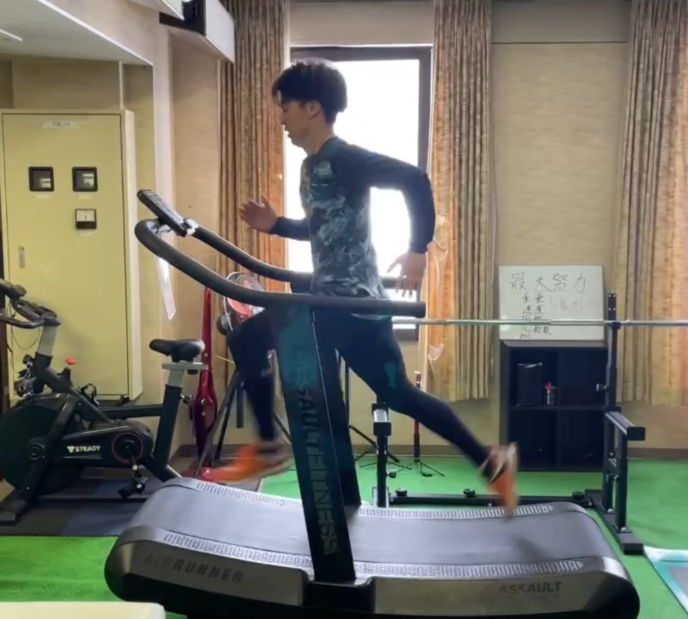
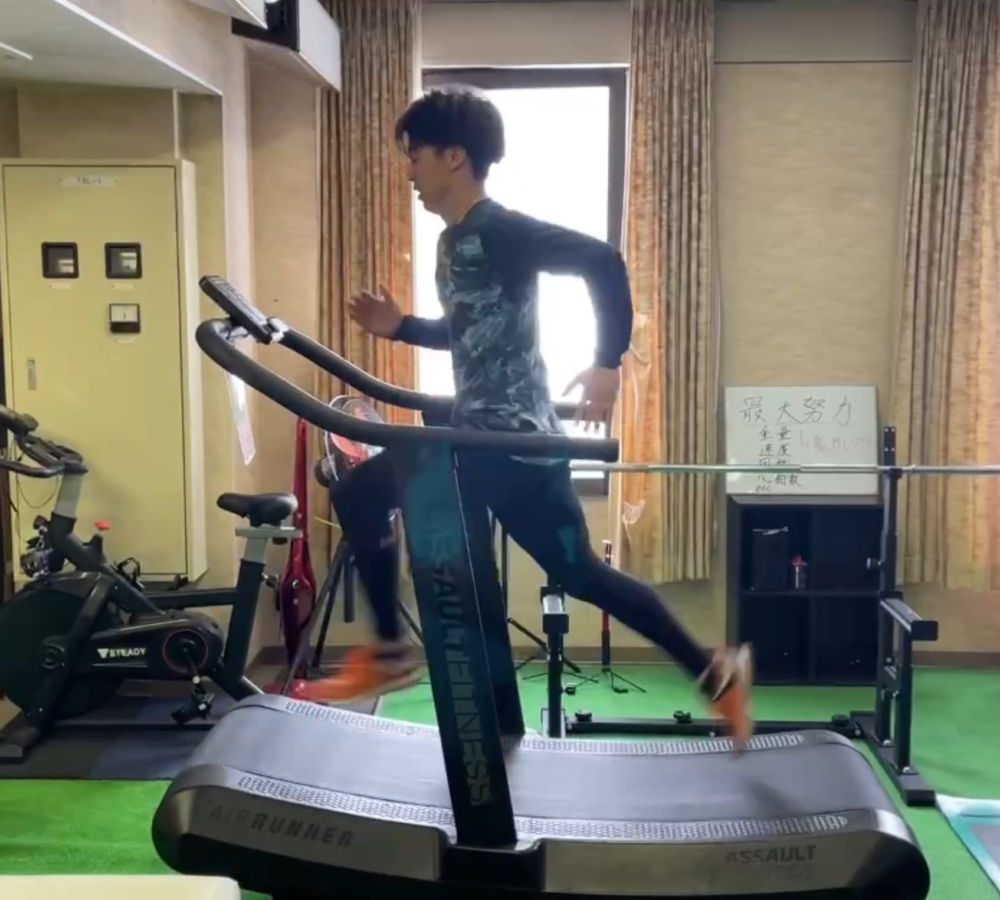

整えるとは、動きを理解すること。
「整【アジャストメント】」は、身体を“直す”場所ではなく、
動きを“再現する力”を取り戻す場所。
感覚・構造・出力を結び、再現性のあるパフォーマンスを設計します。
思考を現場へ。再現性を共有する。
考えたことを、現場の動きに落とし込む。
理論を体で試し、手で確かめる。
再現性とは、思考を実行へ変える技術である。


個人の思考をチームで共有する。
言葉と数値を合わせ、理解を揃える。
コミュニケーションが、再現の制度を高める。

整える・考える・実行する。
その流れを一つの循環として設計する。
現場と知がつながるとき、進化が始まる。
野球選手・アスリート専門トレーナー
身体を“整える”から“再現する”へ。
「整【アジャストメント】」は、身体を“直す”場所ではなく、
動きを“再現する力”を取り戻す場所。
感覚・構造・出力を結び、再現性のあるパフォーマンスを設計します。
社会人野球チームやアスリート個人への帯同・サポートを実施。
動作分析、フィジカルトレーニング、再発防止設計まで一貫対応。
 


チーム単位でも、個人単位でも。
現場から再現性を設計し、成長を加速させます。